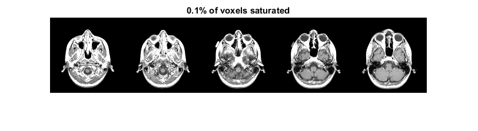
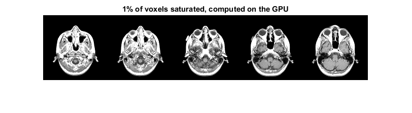

imadjust3
IMADJUST3 Adjust image intensity values for N-D images (supports gpuArray)
Contents
Syntax
J = IMADJUST3(I) J = IMADJUST3(I, PERCENT) J = IMADJUST3(I, [LOW_IN; HIGH_IN]) J = IMADJUST3(I, INLEVEL, [LOW_OUT; HIGH_OUT]) J = IMADJUST3(I, INLEVEL, [LOW_OUT; HIGH_OUT]) J = IMADJUST3(I, INLEVEL, [LOW_OUT; HIGH_OUT], GAMMA) J = IMADJUST3(I, INLEVEL, [LOW_OUT; HIGH_OUT], GAMMA, USESINGLE) GPUARRAYB = IMADJUST3(GPUARRAYA, ___)
Description
J = IMADJUST3(I) maps the intensity values in a N-D grayscale image I to new values in J such that 1% of data is saturated (Note that imadjust defaults to 2%). This increases the constrast of the output image J.
J = IMADJUST3(I, PERCENT) maps the intensity values in I to new values in J such that the given PERCENT percentage of the image is saturated. This increases the constrast of the output image J.
J = IMADJUST3(I, INLEVEL, [LOW_OUT; HIGH_OUT]) maps the values in intensity image I to new values in J such that values between boundaries map to values between LOW_OUT and HIGH_OUT. INLEVEL can be a percentage as described above or a vector with [LOW_IN; HIGH_IN] supplied directly. Values below LOW_IN and above HIGH_IN are clipped that is, values below LOW_IN map to LOW_OUT, and those above HIGH_IN map to HIGH_OUT. You can use an empty matrix ([]) for [LOW_IN; HIGH_IN] or for [LOW_OUT; HIGH_OUT] to specify the default of [0 1]. If you omit the argument, [LOW_OUT; HIGH_OUT] defaults to [0 1].
J = IMADJUST3(I, INLEVEL ,[LOW_OUT; HIGH_OUT], GAMMA) maps the values of I to new values in J as described in the previous syntax. GAMMA specifies the shape of the curve describing the relationship between the values in I and J. If GAMMA is less than 1, the mapping is weighted toward higher (brighter) output values. If GAMMA is greater than 1, the mapping is weighted toward lower (darker) output values. If you omit the argument, GAMMA defaults to 1 (linear mapping).
J = IMADJUST3(IMADJUST3(I, INLEVEL, [LOW_OUT; HIGH_OUT], GAMMA, USESINGLE) forces single precision in case the input is an integer datatype. This limits memory usage especially when working with GPUARRAY.
Note that if HIGH_OUT < LOW_OUT, the output image is reversed, as in a photographic negative.
Class Support
The input image can be uint8, uint16, int16, double, single or a gpuArray with one of these datatypes underlying. The output image has the same class as the input image.
Examples
Adjust Contrast of a N-D Grayscale Image Read a low-contrast 4-D grayscale image into the workspace and display a montage of it.
vol = load('mri'); montage(vol.D, 'Indices', 1:5, 'Size', [1, 5]); title('Original image volume');

Adjust the contrast of the image so that 1% of all voxels are saturared and display a montage of it.
volAdj = imadjust3(vol.D); montage(volAdj, 'Indices', 1:5, 'Size', [1, 5]); title('1% of voxels saturated')

Adjust Contrast of a N-D Grayscale Image by Saturating a given Percentage of Image Elements. Read a low-contrast 4-D grayscale image into the workspace and display a montage of it.
vol = load('mri'); montage(vol.D, 'Indices', 1:5, 'Size', [1, 5]); title('Original image volume');
Adjust the contrast of the image so that 0.1% of all voxels are saturared and display a montage of it.
volAdj = imadjust3(vol.D, 0.001); montage(volAdj, 'Indices', 1:5, 'Size', [1, 5]); title('0.1% of voxels saturated')
Adjust Contrast of a N-D Grayscale Image specifying Contrast Limits Read a low-contrast 4-D grayscale image into the workspace and display a montage of it.
vol = load('mri'); montage(vol.D, 'Indices', 1:5, 'Size', [1, 5]); title('Original image volume');

Adjust the contrast of the image, specifying contrast limits
volAdj = imadjust3(vol.D, [0.3 0.7]); montage(volAdj, 'Indices', 1:5, 'Size', [1, 5]); title('Specified contrast limits [0.3 0.7]')

Adjust Contrast of a N-D Grayscale Image specifying non-linear Gamma Read a low-contrast 4-D grayscale image into the workspace and display a montage of it.
vol = load('mri'); montage(vol.D, 'Indices', 1:5, 'Size', [1, 5]); title('Original image volume');

Adjust the contrast of the image, specifying a gamma value
volAdj = imadjust3(vol.D, [], [], 0.5); montage(volAdj, 'Indices', 1:5, 'Size', [1, 5]); title('Specified gamma of 0.5');

Adjust Contrast of a N-D Grayscale Image Read a low-contrast 4-D grayscale image into a gpuArray and display a montage of it.
vol = load('mri'); D = gpuArray(vol.D); montage(gather(D), 'Indices', 1:5, 'Size', [1, 5]); title('Original image volume');
Adjust the contrast of the image so that 1% of all voxels are saturared and display a montage of it.
DAdj = imadjust3(D); montage(gather(DAdj), 'Indices', 1:5, 'Size', [1, 5]); title('1% of voxels saturated, computed on the GPU')
Input Arguments
| I -- Image to be adjusted (gpuArray supported) |
| grayscale N-D image |
| Image to be ajdusted, specified as grayscale |
| Data Types: single | double | int16 | uint8 | uint16 | uint32 | gpuArray (with the previous underlying data types) |
| INLEVEL -- PERCENT or [LOW_IN, HIGH_IN] - Contrast limits |
| 0.01 (Default) | scalar between 0 and 1 | [0 1] (Default for empty entry) | two-element numeric vector with values between 0 and 1 |
| Contrast limits either as a percentage of pixels to be saturated or as direct lower and upper limits. Values below LOW_IN and above HIGH_IN are clipped; that is, values below LOW_IN map to LOW_OUT, and those above HIGH_IN map to HIGH_OUT. If you specify an empty matrix ([]), imadjust3 uses the default limits [0 1]. If only an image is supplied imadjust3 will saturate 1% of image elements. |
| Data Types: double |
| OUTLEVEL -- Contrast limits for output image |
| [0 1] (Default) | two-elment numeric vector with values between 0 and 1 |
| Contrast limits for the output image, specified as a two-element numeric vector with values between 0 and 1. Values below low_in and above high_in are clipped; that is, values below low_in map to low_out, and those above high_in map to high_out. If you specify an empty matrix ([]), imadjust3 uses the default limits [0 1]. |
| Data Types: double |
| GAMMA -- Shape of the curve describing relationship of input and output values |
| 1 (default) | double real scalar |
| Shape of curve describing relationship of input and output values, specified as a numeric value. If gamma is less than 1, imadjust weights the mapping toward higher (brighter) output values. If gamma is greater than 1, imadjust weights the mapping toward lower (darker) output values. If you omit the argument, gamma defaults to 1 (linear mapping). |
| Data Types: double |
| USESINGLE -- Scalar bool flag to indicate whether to use single precision for integer based images |
| false (default) | bool scalar |
| In case of integer format images double precision is not always necessary. A true scalar will force imadjust3 to use single precision for these image types thus saving memory. |
| Data Types: logical | numeric |
Output Arguments
| J -- Adjusted image (gpuArray supported) |
| grayscale N-D image |
| Adjusted image, returned as a grayscale image. J has the same class as the input image. |
| Data Types: single | double | int16 | uint8 | uint16 | uint32 | gpuArray (with the previous underlying data types) |
See Also
imadjust